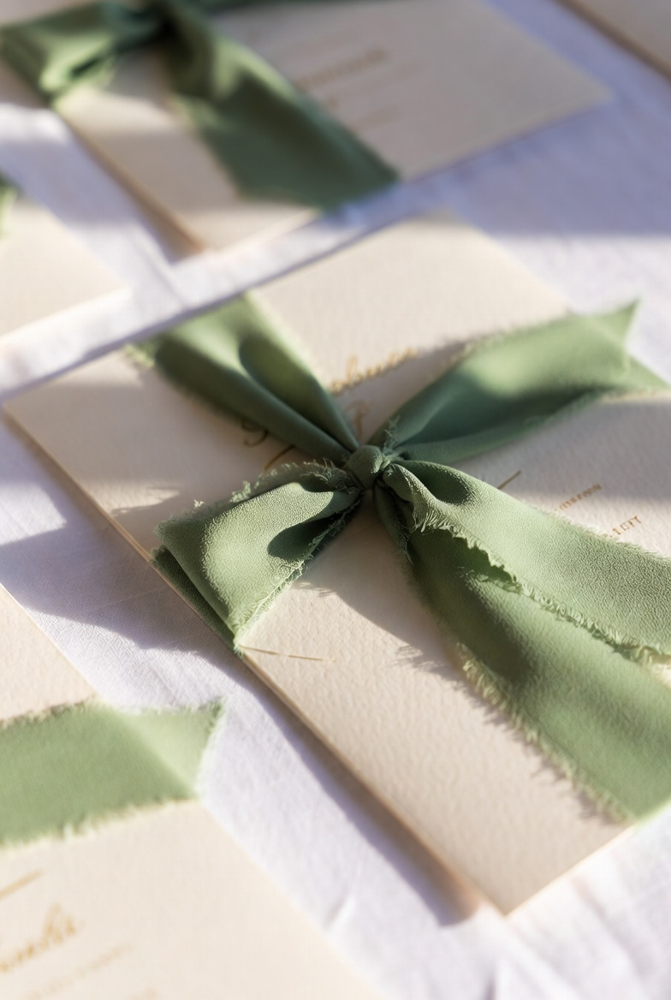
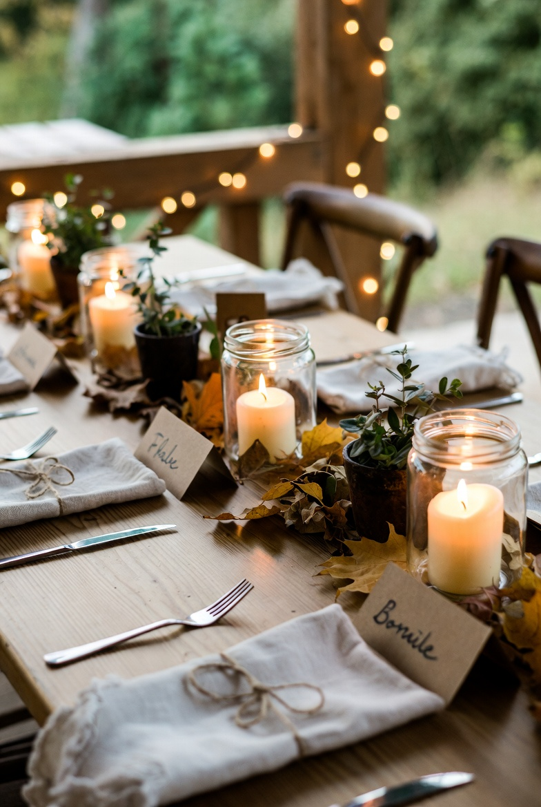
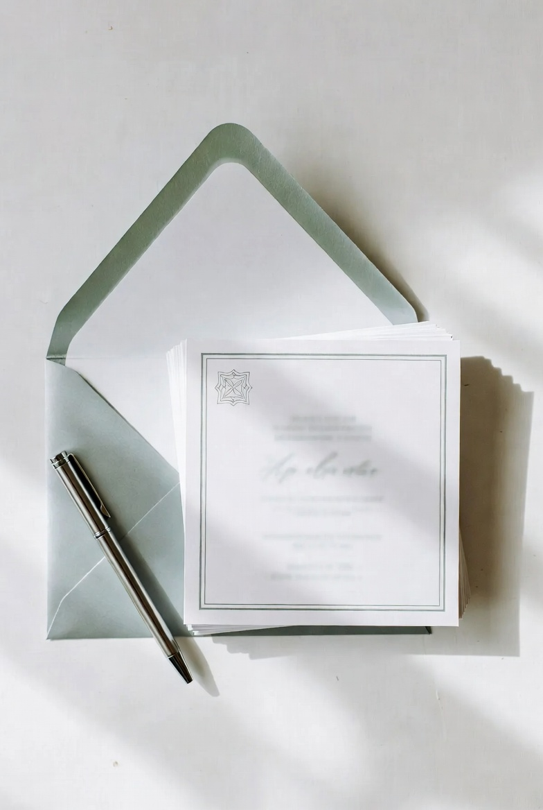
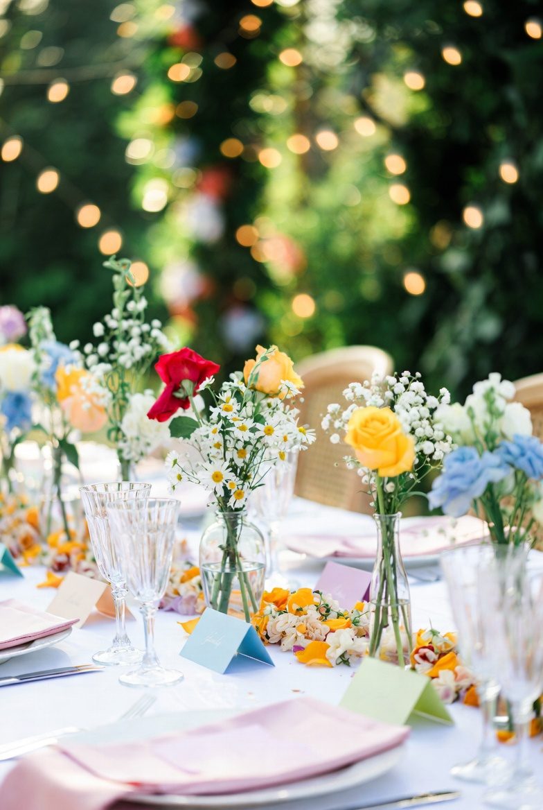
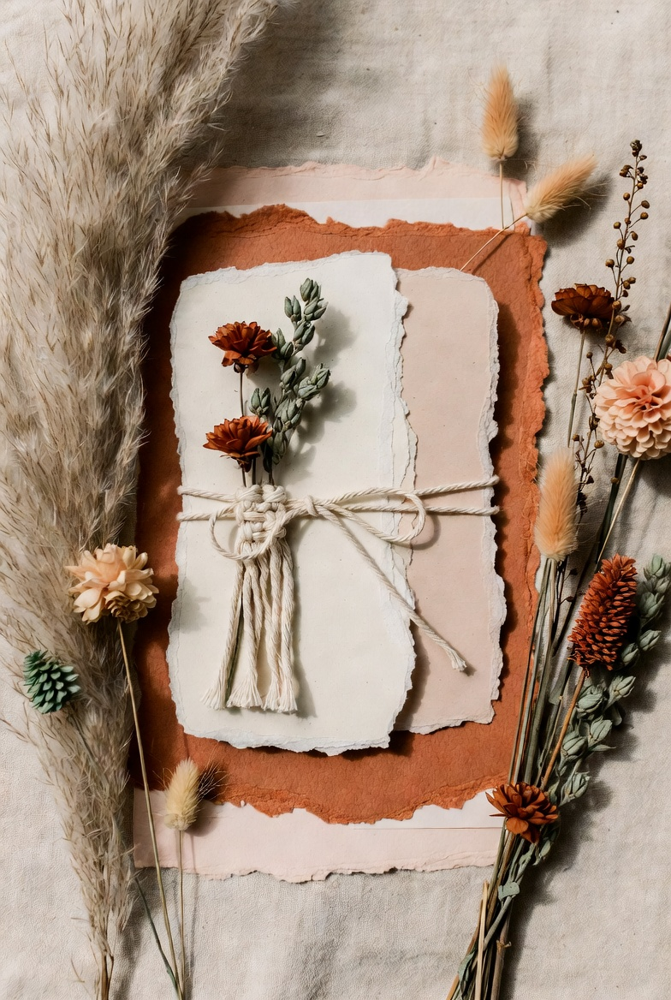
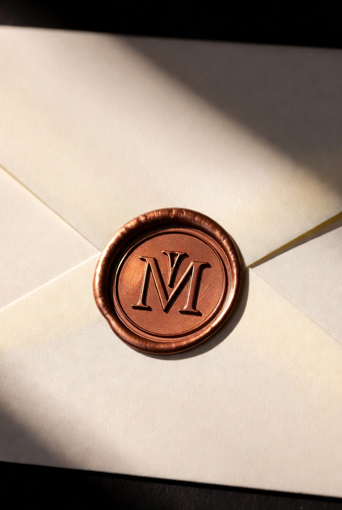
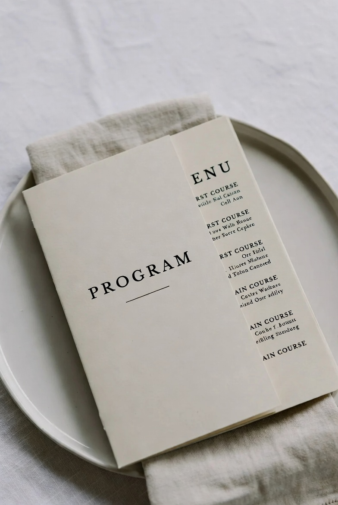
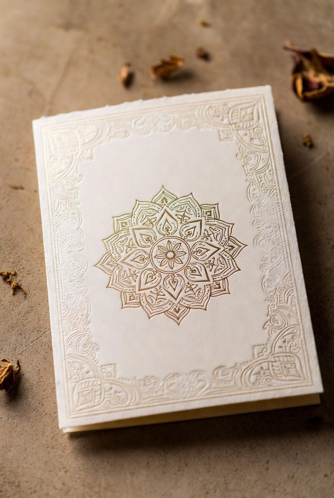

Soft Signature Vows
Smooth, handwritten curves for names on invitations, welcome signs, and ceremony programs. Letters stay distinct even in double surnames, so guests read them at a glance.
View FontWedding fonts for invitations, menus, websites, and signage — so you stop testing random scripts and move straight to layouts guests can actually read.
Browse Wedding FontsYou print a stack of invitations and notice that the elegant script has almost disappeared into the paper. Thin strokes look beautiful on screen, but in real life guests have to guess if the wedding starts at 3 or 8 o’clock.
On mobile, the same font turns long names and venue lines into a solid knot. A layout that seemed perfect in a desktop mockup becomes hard to read in a browser or on a Pinterest graphic, so you reopen the file and change typography again.
The safest approach is not to collect dozens of fonts, but to work with a small tested set of wedding fonts that stays clear in long names, dates, and real layouts — on textured paper, screens, and large signage.
The Foundation Collection

Smooth, handwritten curves for names on invitations, welcome signs, and ceremony programs. Letters stay distinct even in double surnames, so guests read them at a glance.
View Font
Organic strokes that feel at home next to wood, linen, and kraft paper. Works well on invitations, table numbers, and bar signs for outdoor or barn‑style celebrations.
View Font
A clean script for minimalist layouts with plenty of white space. Elegant loops keep the design emotional, while clear shapes make dates and short phrases easy to read.
View Font
Lively, bouncy letterforms for destination weddings, garden parties, and joyful brunch receptions. Especially good for place cards and thank‑you notes in smaller sizes.
View FontThe Hierarchy Collection

Script and companion font that were made to live together. Use the script for names and short phrases, and the matching font for dates and menu lines to keep the suite consistent.
View Font
Created for crests, wax seals, and logo‑style marks on envelopes and thank‑you cards. Details stay readable when you use foil, embossing, or very small sizes.
View Font
A calm serif that holds practical information: dates, addresses, and timings. Balances expressive scripts and helps guests focus on what they need to know.
View Font
Decorative script with an intricate rhythm. Use it for titles or short blessings where you want maximum visual impact with just a few words.
View FontMany wedding fonts on Creative Fabrica are supplied in formats suitable for both print and digital projects. Before you design, check the product page to see which file types are included (OTF/WOFF) and test a sample in your software.
A simple structure that works in most cases is two or three fonts: one script for names, one clear serif or sans‑serif for details, and an optional style for initials. This keeps the design consistent without visual noise.
Type the full names and date, then print a quick test or zoom out to 50% on your screen. If you can still read every number without guessing, the font is ready for real invitations.